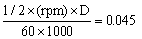
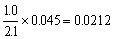

The gasifier will be designed for an engine of the following specifications:
|
Bore: |
84.14 mm |
|
Stroke: |
80 mm |
|
Displacement (D): |
3.56 l |
Max. air/gas intake: 
Air/gas ratio (stoichiometric): 1.1: 1.0
Max. gas intake: 
The real gas intake is 0.0212 x f, in which
f = volumetric efficiency (%) of the engine and -is dependent on:
- rpm of the engine
- design of the air inlet manifold of the engine
- fouling of the air inlet manifold of the engine
At 1500 rpm, for a well designed and clean air inlet manifold f can be taken at 0.8 -
Therefore the real gas intake is: 0.0212 x 0.8 =30.017 m³/s
The heat value of the gas is taken at: 4800 kJ/m³
Therefore the thermal power in the gas is:
Pg = 0.017 x 4800 = 8-1.6 kJ/s = 81.6 kW
The engine efficiency depends partly on the engine's compression ratio. For a compression ratio of 9.5 : 1, the efficiency can be estimated at 28 percent.
Therefore the maximum mechanical output of this engine is:
PM max. = 81.6 x 0.28 = 22.85 kW
The maximum electrical output (cos phi generator = 0.8) is therefore:
PE max. = 22.85 x 0.8 = 18.3 kVA